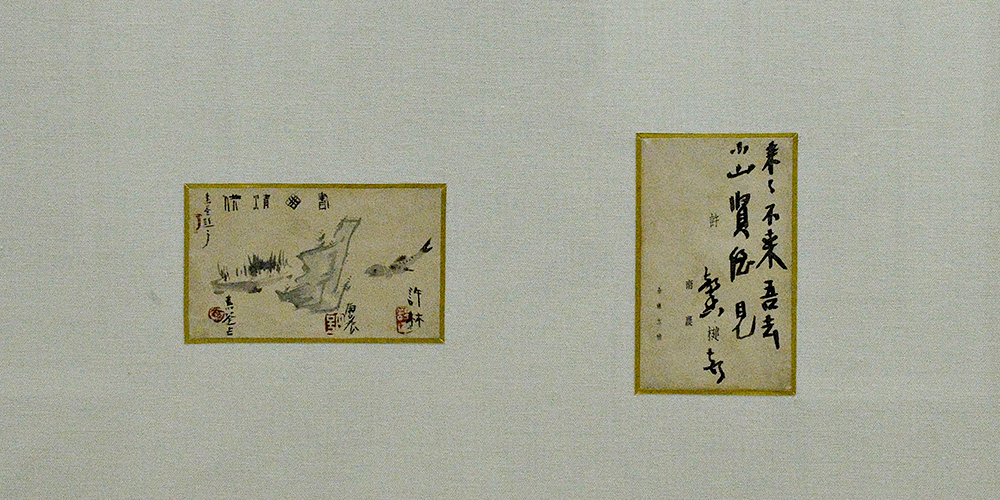
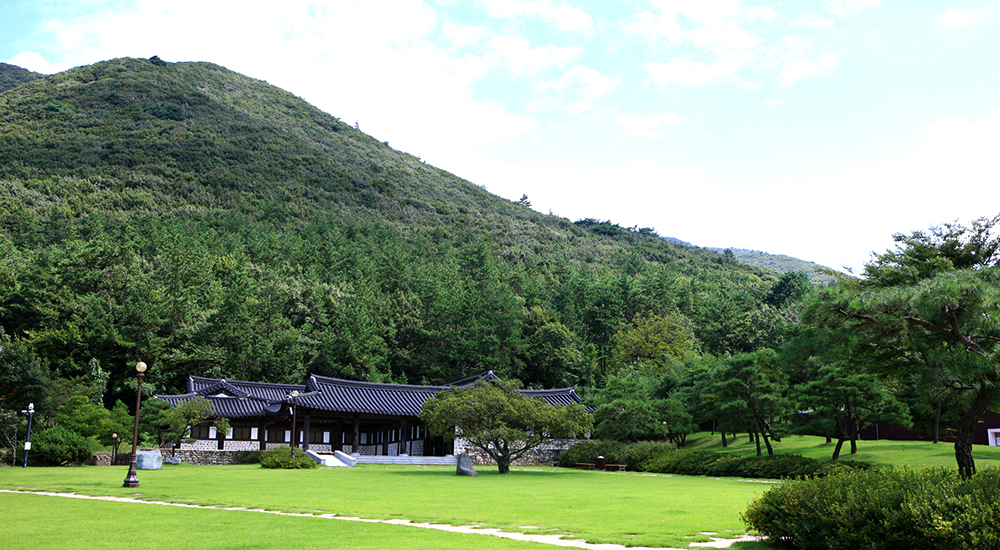
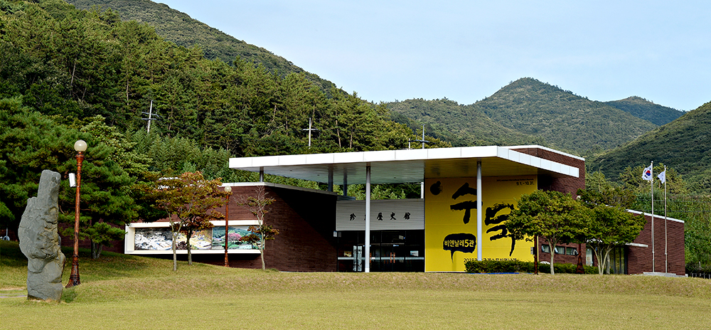

와 제 롤모델이 잡스에요!!! 아이폰 첫 출시되고 나서부터 계속 아이폰 쓰고 있는데 잡스가 너무 그리워요ㅠㅠ 지금은 돈만 벌려고 하는 것 같아서 디자인 발전도 없고ㅠㅠ와 제 롤모델이 잡스에요!!! 아이폰 첫 출시되고 나서부터 계속 아이폰 쓰고 있는데 잡스가 너무 그리워요ㅠㅠ 지금은 돈만 벌려고 하는 것 같아서 디자인 발전도 없고ㅠㅠ와 제 롤모델이 잡스에요!!! 아이폰 첫 출시되고 나서부터 계속 아이폰 쓰고 있는데 잡스가 너무 그리워요ㅠㅠ 지금은 돈만 벌려고 하는 것 같아서 디자인 발전도 없고ㅠㅠ와 제 롤모델이 잡스에요!!! 아이폰 첫 출시되고 나서부터 계속 아이폰 쓰고 있는데 잡스가 너무 그리워요ㅠㅠ 지금은 돈만 벌려고 하는 것 같아서 디자인 발전도 없고ㅠㅠ와 제 롤모델이 잡스에요!!! 아이폰 첫 출시되고 나서부터 계속 아이폰 쓰고 있는데 잡스가 너무 그리워요ㅠㅠ 지금은 돈만 벌려고 하는 것 같아서 디자인 발전도 없고ㅠㅠ
여행에 빠지다
9월에 떠나기 좋은 국내 여행지 추천
그림과 소리가 꽃피는‘예향 진도’
그림과 소리가꽃피는 ‘예향 진도’
2014년 이후 진도에 관련한 뉴스는 온통 세월호와 관련된 것이었다. 지금은 세월호의 교훈을 잊지 않는다는 전제 아래 일상으로 돌아와야 할 때다. 그래야 관광객들의 발길이 끊겼던 진도를 비롯한 전남 지방 주민들도 평정을 되찾을 것이기 때문이다. 게다가 요즘 진도를 찾는다면 볼거리는 더욱 풍성하다. 목포와 진도 일원에서 9월부터 두 달간 ‘2018 전남국제수묵비엔날레’가 열리기 때문이다. 전시에 앞서 소리와 서화가 일상 속에서 꽃피는 예향(禮鄕) 진도를 찾아봤다.
글
우현석 (서울경제신문 객원기자 겸 여행 작가)
사진
진도군청, 전남 국제수묵비엔날레사무국 제공
-
수도권에서 살고 있는 이들이 누릴 수 있는 이점 중 하나는 아마도 풍요로운 문화생활의 향유일 것이다. 하지만 전라남도로 접어들면 이 같은 삶은 그저 일상일 뿐이다. 전라남도 곳곳에는 그림과 소리가 흐드러지기 때문이다. 나는 3년 전 진도의 운림산방을 처음 찾았을 때의 감동을 잊을 수 없다. 운림산방은 조선 후기 남종화의 태두로 일컫는 소치(小痴) 허련이 살면서 작품 활동을 하던 곳이다. 이후 5대에 걸쳐 그의 후손들이 나고 자라며 화풍을 이어 온 근대 미술사의 현장이다. 때문에 진도의 풍류는 운림산방 한 곳만 방문해도 익히 짐작할 수 있다.
그 절정이 운림산방 소장품 중 가장 작은 작품인 서창청공(書窓情供, 허림 作, 1942)이다. 명함 크기의 서창청공은 소치일가의 예술세계를 한눈에 볼 수 있는 소(小)우주다. 남농 허건의 명함에 그린 이 작품은 세 사람이 함께 만든 작품이다. 그 작은 명함에 허림(허건의 동생)은 피라미를, 허건은 바위를, 소상현(허건의 제자)은 화초를 그려 놓았다. 명함 뒷면의 글귀는 더욱 걸작이다. ‘래래불래오거(來來不來吾去)’라고 적힌 글귀는 ‘오려면 오고 말라면 마라. 안 오면 우리는 간다’로 직역할 수 있는데, 다시 의역하면 ‘우리가 이 글방에서 담소를 즐기고 있다. 소상현은 빨리 와서 같이 놀자’는 내용이다. 자리에 목을 매고, 돈에 눈이 먼 속세의 무리와는 섞일 수 없는 고고함이 묻어나는 대목이다.
운림산방에 전시된 대나무 그림에도 그의 정신이 묻어있다. 잎이 위로 향한 댓이파리는 힘이 좋아 청죽(靑竹)이며, 아래잎이 처진 대는 비를 맞은 우죽(雨竹)이고 오른쪽으로 잎이 쏠린 대는 바람을 맞은 풍죽(風竹)이다.
-

서창청공(書窓情供)
운림산방 소장품 중 가장 작은 작품으로 소치일가의 예술세계를 한눈에 볼 수 있다.
-

진도 운림산방
진도 운림산방은 조선 후기 소치(小痴) 허련이 살면서 작품 활동을 하던 곳이다. 이후 5대에 걸쳐 그의 후손들이 나고 자라며 화풍을 이어 온 근대 미술사의 현장이다.
한편 ‘수묵화의 가치와 정신을 전파하고, 수묵화를 신한류 문화자원으로 육성하자’는 취지로 9월 1일부터 10월 31일까지 두 달간 ‘2018 전남국제수묵비엔날레’가 목포시와 진도군 일원에서 개최된다. 이번 비엔날레는 전통 회화를 주요 테마로 하는 대형 전시로 목포와 진도를 이어, 도시 전체가 하나의 전시장이 되는 신선한 시도가 될 것으로 예상한다. 이번 전시 기간에 방문한다면, 진도의 운림산방(야외공간 포함), 금봉미술관, 남도전통미술관, 옥산미술관(진도향토문화회관 내), 목포권역인 목포연안여객선터미널갤러리, 노적봉예술공원미술관, 목포문화예술회관(야외공간 포함)에서 수묵전시, 국제레지던시, 학술회의, 교육·체험 등 풍요로운 행사를 만나볼 수 있을 것이다.
-

2018 전남국제수묵비엔날레
운림산방 옆의 갤러리. 이 곳에서 ‘2018 전남국제수묵비엔날레’가 9월부터 2개월간 열린다.
진도의 그림에 취해 보았다면 바닷바람을 맞으며 바다 풍광을 감상해 봐야 한다. 진도의 풍광은 곳곳이 절경이지만 그중에서도 세방낙조 전망대에서 바라보는 석양이 압권이다. 해 질 무렵 바다 위에 점점이 떠 있는 섬들 사이로 침잠해 들어가는 일몰은 바다와 하늘을 주황색으로 물들인다. 세방낙조의 아름다움은 기상청이 ‘한반도 최남단 제일의 낙조 전망’으로 선정했을 정도로 경치가 아름답다.
이 곳 전망대에서는 주지도, 양덕도가 바라다보이는데, 섬의 꼭대기에는 손·발가락처럼 생긴 화강암 바위가 솟아 있어 손·발가락섬으로도 불리기도 한다. 이와 함께 적을 응시하고 있는 사자 모양과 비슷해 사자섬이라고 불리는 광대도 너머로 해가 떨어지고, 어둠이 깔리는 10~20분 동안의 하늘빛은 보는 이로 하여금 말을 잊게 만든다.
-
세방낙조
세방낙조 전망대에서 바라보는 석양은 압권이다. 해 질 무렵 바다 위에 점점이 떠 있는 섬들 사이로 침잠해 들어가는 일몰은 바다와 하늘을 주황색으로 물들인다.
TIP서울에서 찾아가는 방법
-
고속버스 센트럴시티터미널 - 진도공용터미널 (약 4시간 40분 소요)
-

 자동차 서해안고속도로 – 관광레저로 (약 5시간 30분 소요)
자동차 서해안고속도로 – 관광레저로 (약 5시간 30분 소요) -
시외버스 동서울종합터미널 - 진도공용터미널 (약 5시간 40분 소요)
-
최고예요
322
-
좋아요
322
-
슬퍼요
322
-
그저 그래요
322
-
화나요
322